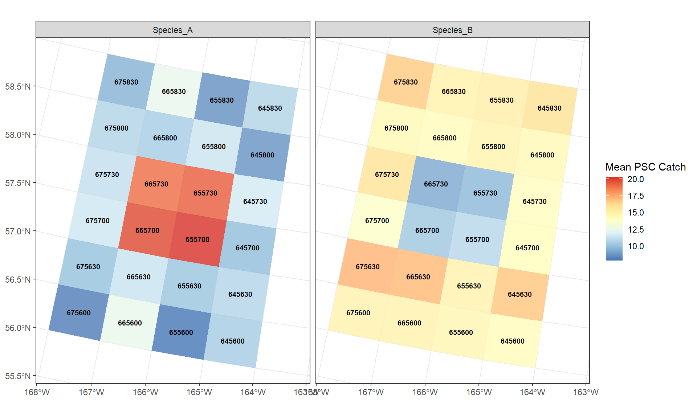
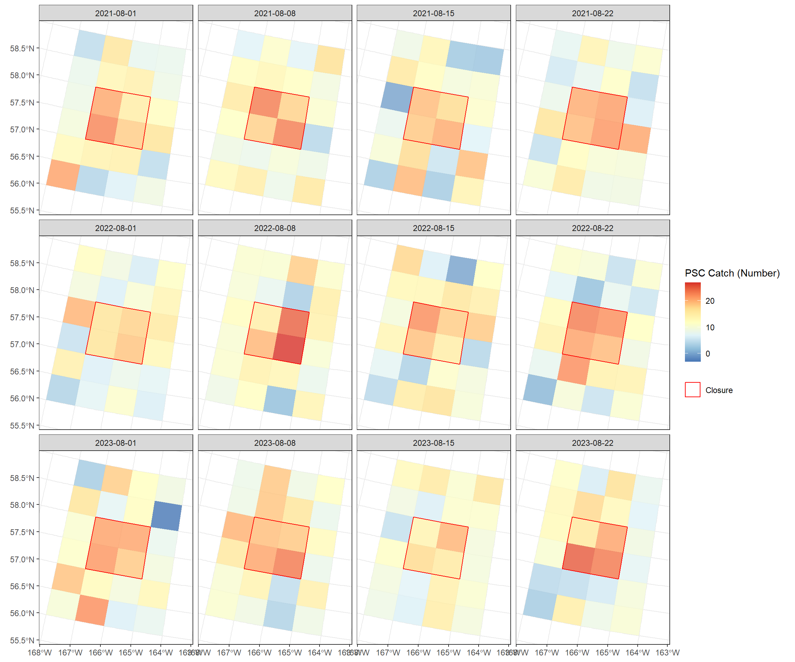
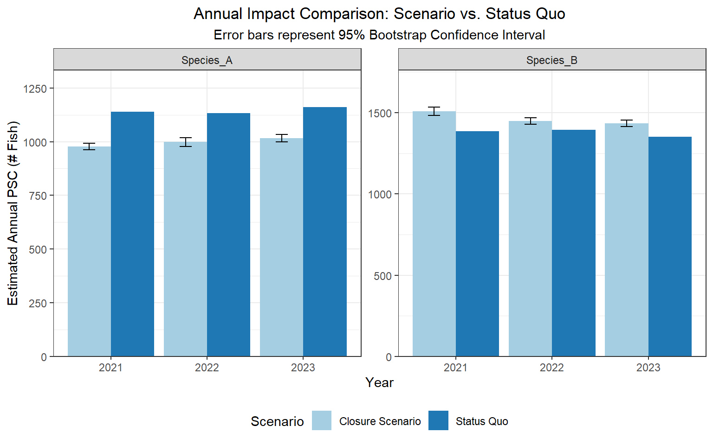

Fleet Movement Model: A Proportional Redistribution Approach to Bycatch Evaluation
Published
March 6, 2026
1. Setup
This vignette evaluates a simulated trade-off in bycatch effects under a hypothetical closure scenario. All data is simulated to show process only. This is also where we load the background grid and any parameters such as timeframes. Here, we use a baseline grid of the state statistical areas used for commercial catch accounting in Alaska, and are going to simulate data to years 2021:2023.
Code
# Load packageslibrary(dplyr)library(terra)library(ggplot2)library(lubridate)library(tidyr)library(units)library(gridExtra)library(tidyterra)library(ggpubr)library(patchwork)library(ggpattern)library(data.table)library(sf)library(kableExtra)library(igraph)library(knitr)options(scipen=999)# Parametersspp_title ="Species"title_name ="Closure"timeframe <-c(2021:2023)# Note: Ensure these paths are relative to your .qmd file locationAK <- terra::vect("shapefiles/mv_alaska_1mil_py.shp")stat_areas <- terra::vect("shapefiles/State_Stat_2004.shp")# Create timeseries liststat.list <-list()for (i in timeframe){ stat_shape <- stat_areas stat_shape$YEAR <- i stat.list[[as.character(i)]] <- stat_shape}stat.areas.timeseries <- terra::vect(stat.list)
2. Load Catch Data
This is where you load your catch data [‘catch_data’]. For this example, we are simulating weekly catch data for 20 stat_areas closest to a hypothetical closure area. Here, we simulate two species (A and B), where Species A has a bias of higher PSC catch inside the area and Species B has a higher PSC catch outside the area.
Code
#| label: simulation# --- 5. Simulation Data (Biased for high PSC inside a closure) ---closure.stat.areas <-c(665730, 665700, 655730, 655700)closure <-subset(stat_areas, stat_areas$STAT_AREA %in% closure.stat.areas)closure$closed <-"yes"closure2 <- terra::aggregate(closure)non_closure <- stat_areas[!(stat_areas$STAT_AREA %in% closure.stat.areas), ]non_closure$closed <-"no"set.seed(123)num_to_select <-20# 1. Calculate distances from non-closure to closure areasdistances_to_closure <- terra::distance(non_closure, closure2)min_distances <-apply(distances_to_closure, MARGIN =1, FUN = min)non_closure$dist_to_closure <- min_distances# 2. Select 20 areas outside but close to the closurenon_closure_ordered <- non_closure[order(non_closure$dist_to_closure), ]sim_areas <- non_closure_ordered %>%slice(1:num_to_select)# 3. Merge back closure areassim_areas <-rbind(sim_areas, closure)# 4. Generate Weekly Data with PSC Biassimulated_years <-c(2021, 2022, 2023)sim.list <-list()# Define the two scenariosspecies_configs <-list("Species_A"=list(inside_mu =20, outside_mu =10), # High inside"Species_B"=list(inside_mu =10, outside_mu =15) # High outside (The "Opposite"))all_species_list <-list()for(spp_name innames(species_configs)){ conf <- species_configs[[spp_name]] sim.list <-list()for(i in simulated_years){ week_sequence <-seq.Date(from =as.Date(paste0(i, "-08-01")), by ="week", length.out =4) year_weeks_list <-list()for(week_date inas.character(week_sequence)) { is_inside <- sim_areas$STAT_AREA %in% closure.stat.areas num_inside <-sum(is_inside) num_outside <-sum(!is_inside) wk_dat <-data.frame(STAT_AREA = sim_areas$STAT_AREA,SPECIES = spp_name, # Track which species this isYEAR = i,WEEK_END_DATE = week_date,CATCH_ACTIVITY_DATE =as.character(as.Date(week_date) -2),PROCESSING_SECTOR ="X" ) wk_dat$GF_TOTAL_CATCH_MT <-round(rnorm(nrow(sim_areas), mean =50, sd =10), 2)# Apply the bias based on the species config wk_dat$PSC_TOTAL_COUNT <-NA# Inside Areas wk_dat$PSC_TOTAL_COUNT[is_inside] <-round(rnorm(num_inside, mean = conf$inside_mu, sd =3), 2)# Outside Areas (Using rnorm for both to keep the 'opposite' effect clean) wk_dat$PSC_TOTAL_COUNT[!is_inside] <-round(rnorm(num_outside, mean = conf$outside_mu, sd =5), 2) year_weeks_list[[week_date]] <- wk_dat } sim.list[[as.character(i)]] <-do.call(rbind, year_weeks_list) } all_species_list[[spp_name]] <-do.call(rbind, sim.list)}# Combine both species into one master dataframecatch_data_combined <-do.call(rbind, all_species_list)# Merge with SpatVectorcatch_data <-merge(stat_areas, catch_data_combined, by ="STAT_AREA", all.x =FALSE)
3. Explore Bycatch Data
In this example, the average highest PSC catch of Species A are in areas 665730, 665700, 655730, 655700, while these areas have the lowest PSC catch for Species B.
Code
# This groups by STAT_AREA and calculates the mean of all other numeric columnscatch_data_means <-st_as_sf(catch_data)catch_data_means <- catch_data_means %>% dplyr::group_by(STAT_AREA, SPECIES) %>%summarise(mean_psc =mean(PSC_TOTAL_COUNT) )catch_data_means2 <- terra::vect(catch_data_means)ggplot() + tidyterra::geom_spatvector(data = catch_data_means2, aes(fill = mean_psc), alpha =0.8, col =NA, na.rm =TRUE) + tidyterra::geom_spatvector_text(data = catch_data_means2, aes(label = STAT_AREA),size =2.5, # Adjust size as neededfontface ="bold", check_overlap =TRUE) +# Prevents messy overlapping textscale_fill_distiller(palette ="RdYlBu", name ="Mean PSC Catch") +theme_bw() +theme(plot.title =element_text(hjust =0.5), axis.title =element_blank()) +facet_wrap(~SPECIES)

Figure 1: Simulated weekly PSC distributions.
4. Closure Assignment
Defining the closure area based on the statistical areas to reduce bycatch of Species A (665730, 665700, 655730, 655700). We will later look at the trade-off with the closure’s effect on Species B.
The above method is a user-defined selection of stat_areas. We can also use a spatial optimization approach to allow the data to choose the stat_areas with the highest reduction in PSC. In this example, select the four adjacent stat_areas with the highest PSC catch. Because we use simulated data, this approach unsurprisingly gives us the same four areas for Species A as above.
Code
#| label: automated-selection-fixed# 1. Convert to sf and ensure we have a unique ID for indexingstat_sf <-st_as_sf(stat_areas)stat_sf$row_id <-1:nrow(stat_sf)# 2. Define Neighbors (Contiguity)# 'queen = TRUE' includes corners; 'FALSE' is Rook (edges only)nb <-st_touches(stat_sf) # 3. Create a summary table of Species A PSC# Ensure it matches the stat_sf orderpsc_lookup <- catch_data_means %>%filter(SPECIES =="Species_A") %>%as_tibble()# 4. The "Best 4" Search Logicresults <-list()for(i in1:nrow(stat_sf)) {# Get the seed area ID seed_area <- stat_sf$STAT_AREA[i]# Find all neighbors of that seed neighbor_indices <- nb[[i]] neighbor_areas <- stat_sf$STAT_AREA[neighbor_indices]# Get PSC values for the seed + all its neighbors potential_group <- psc_lookup %>%filter(STAT_AREA %in%c(seed_area, neighbor_areas)) %>%arrange(desc(mean_psc))# If we have at least 4 areas in this "cluster", take the top 4if(nrow(potential_group) >=4) { top_4 <- potential_group %>%slice(1:4) results[[i]] <-data.frame(seed = seed_area,total_psc =sum(top_4$mean_psc),area_list =paste(top_4$STAT_AREA, collapse =",") ) }}# Combine and find the winneroptimization_results <-do.call(rbind, results)winner <- optimization_results[order(-optimization_results$total_psc), ][1, ]# 5. Extract the 4 Stat Areasclosure.stat.areas <-as.numeric(unlist(strsplit(winner$area_list, ",")))# --- Prepare Summary Table ---# We want to see how the Top 4 contribute to the total PSC for BOTH speciesfinal.summary.table <- catch_data_means %>%filter(STAT_AREA %in% closure.stat.areas) %>%as_tibble() %>%arrange(SPECIES, desc(mean_psc)) %>%group_by(SPECIES) %>%mutate(Rank =row_number(),cum_psc =cumsum(mean_psc) ) %>%ungroup() %>%select(SPECIES, Rank, STAT_AREA, mean_psc, cum_psc)# Calculate Cluster Totals for a 'Total' rowtotals <- final.summary.table %>%group_by(SPECIES) %>%summarise(STAT_AREA ="CLUSTER TOTAL",mean_psc =sum(mean_psc),Rank =NA )final.summary.table <-bind_rows(final.summary.table, totals) %>%arrange(SPECIES, is.na(Rank), Rank)#print results# 1. Extract the winning datawinner_areas <-paste(closure.stat.areas, collapse =", ")total_psc_value <-round(winner$total_psc, 2)seed_area <- winner$seed# 2. Print the dynamic sentence# Print the concise outputcat(paste0("**Automated Selection:** ", winner_areas))
Weekly groundfish catch - simulated to be randomly distributed across the study area (closure + 20 adjacent stat areas). These are used to calculate PSC rates per stat_area.
ggplot() +# Use subsetting [ ] to filter the SpatVector rows for Species_A tidyterra::geom_spatvector(data = catch_data[catch_data$SPECIES =="Species_A", ], aes(fill = PSC_TOTAL_COUNT), alpha =0.8, col =NA, na.rm =TRUE) +scale_fill_distiller(palette ="RdYlBu", name ="PSC Catch (Number)") +# Keep the closure overlay (this is independent of species) tidyterra::geom_spatvector(data = closure2, aes(color ="Closure"), fill =NA, alpha =0.5, lwd =0.5) +scale_color_manual(values =c("Closure"="red"), name =NULL) +facet_wrap(~WEEK_END_DATE, ncol=4) +theme_bw() +theme(plot.title =element_text(hjust =0.5), axis.title =element_blank())

Figure 3: Simulated weekly PSC distributions.
7. Assign Closure Dates & Isolate Impacted Hauls
For this exercise, January 1 was chosen for a simple year-long closure.
Code
#| label: impacted-hauls#| echo: false#sum status quo PSC by year for later joinsall_psc_status_quo_annual <-as.data.frame(catch_data) %>%group_by(YEAR, SPECIES) %>%reframe(sum_psc_status_quo =sum(PSC_TOTAL_COUNT, na.rm =TRUE) )#assign dates to data ---#set closure dateclosure_dates <-data.frame(YEAR =c(2021,2022,2023),PROCESSING_SECTOR ="X",closure_date =c('2021-01-01','2022-01-01', '2023-01-01'))# 1. Join dates to the dataall_psc_closures_dates <-as.data.frame(catch_data) %>%left_join(closure_dates, by =c("YEAR", "PROCESSING_SECTOR"))# 2. Assign impacts based on datesall_psc_closures_dates <- all_psc_closures_dates %>%mutate(# Ensure dates are actually Date objects for the comparison to workCATCH_ACTIVITY_DATE =as.Date(CATCH_ACTIVITY_DATE),closure_date =as.Date(closure_date),impacted =ifelse(CATCH_ACTIVITY_DATE > closure_date, "yes", "no"),# Calculate tonnage binstons_gf_after_closure =ifelse(impacted =="yes", GF_TOTAL_CATCH_MT, 0),tons_gf_no_closure =ifelse(impacted =="no"|is.na(impacted), GF_TOTAL_CATCH_MT, 0) )# 3. Isolate impacted hauls (Keeping SPECIES column intact)all_psc_impacted <-subset(all_psc_closures_dates, impacted =="yes")
8. Calculate Catch and Proportions Inside/Outside Closure
This step summarizes the data used in the main calculations - the proportions of outside groundish catch where displaced catch is applied to, under the assumption that the fishery will meet the same overall total catch, the total catch inside the closure to be applied to the proportions, the new PSC as a result of the new GF catch applied to local PSC rates, and the PSC caught inside the closure that will be subtracted from the net total.
Code
#| label: rates-props#| echo: false# Identify Inside/Outside after a closure would have occurred ---#identify the areastat_areas_closed <- closure.stat.areas #identify which hauls occurred inside/outside the closed areaall_psc_impacted_cluster <- all_psc_impacted %>%mutate(inside =ifelse(STAT_AREA %in% stat_areas_closed, "yes", "no"))# -- inside catch -- ##isolate hauls occurring inside closed areagf_inside_cluster <-subset(all_psc_impacted_cluster, inside =="yes")#sum gf and psc inside closed area for later calcsgf_inside_summary <- all_psc_impacted_cluster %>%filter(inside =="yes") %>%group_by(SPECIES, YEAR, WEEK_END_DATE, PROCESSING_SECTOR) %>%summarise(tons_gf_inside_wk =sum(GF_TOTAL_CATCH_MT, na.rm =TRUE),psc_measure_inside_wk =sum(PSC_TOTAL_COUNT, na.rm =TRUE),.groups ="drop" )# Calculate mean PSC rates per Stat Area (Outside only)sum.stat.timeseries.gf_all <- all_psc_impacted_cluster %>%filter(inside =="no") %>%group_by(SPECIES, YEAR, WEEK_END_DATE, STAT_AREA, PROCESSING_SECTOR) %>%summarise(tons_gf_wk =sum(GF_TOTAL_CATCH_MT, na.rm =TRUE),mean_psc_wk =mean(PSC_TOTAL_COUNT, na.rm =TRUE),mean_gf_tons_wk =mean(GF_TOTAL_CATCH_MT, na.rm =TRUE),.groups ="drop" ) %>%mutate(mean_psc_rate_wk = mean_psc_wk / mean_gf_tons_wk)# Calculate total catch outside (denominator for proportions)gf.outside.total <- all_psc_impacted_cluster %>%filter(inside =="no") %>%group_by(SPECIES, YEAR, WEEK_END_DATE, PROCESSING_SECTOR) %>%summarise(tons_gf_outside_total =sum(GF_TOTAL_CATCH_MT, na.rm =TRUE),.groups ="drop" )# Join and calculate the redistribution proportionsum.stat.timeseries.gf_all3 <- sum.stat.timeseries.gf_all %>%left_join(gf.outside.total, by =c("SPECIES", "YEAR", "WEEK_END_DATE", "PROCESSING_SECTOR")) %>%mutate(proportion_outside_wk = tons_gf_wk / tons_gf_outside_total)
9. Plot Weekly Proportions
This plot shows the proportions of groundfish catch outside of the closure. These proportions will be what displaced catch is applied to, under the assumption that the fishery will meet the same overall total catch.
10. Calculate Weekly and Annual Summary Statistics
Code
#| label: summary-stats#| echo: false# Join catch from inside area (Matching by Species)total.join <- dplyr::left_join( sum.stat.timeseries.gf_all3, gf_inside_summary %>% dplyr::select(SPECIES, YEAR, WEEK_END_DATE, PROCESSING_SECTOR, tons_gf_inside_wk),by =c("SPECIES", "YEAR", "WEEK_END_DATE", "PROCESSING_SECTOR") ) %>%mutate(# NAs to 0s for weeks with no inside catchtons_gf_inside_wk = tidyr::replace_na(tons_gf_inside_wk, 0),# Multiply displaced catch by the outside proportionsdisplaced_gf_catch_wk = tons_gf_inside_wk * proportion_outside_wk,# Calculate new PSC incurred in the new areasnew_PSC_wk = displaced_gf_catch_wk * mean_psc_rate_wk )total.join2 <- total.join %>%group_by(SPECIES, YEAR, WEEK_END_DATE, PROCESSING_SECTOR) %>%summarise(tons_gf_inside_wk =max(tons_gf_inside_wk),displaced_gf_catch_wk =sum(displaced_gf_catch_wk),new_PSC_wk =sum(new_PSC_wk),mean_psc_rate_wk =mean(mean_psc_rate_wk),.groups ="drop" )# Join the status quo inside psc numbers (Matching by Species)total.join3 <- dplyr::left_join( total.join2, gf_inside_summary %>% dplyr::select(SPECIES, YEAR, WEEK_END_DATE, PROCESSING_SECTOR, psc_measure_inside_wk),by =c("SPECIES", "YEAR", "WEEK_END_DATE", "PROCESSING_SECTOR") ) %>%mutate(psc_measure_inside_wk = tidyr::replace_na(psc_measure_inside_wk, 0),# The "Magic Number": New outside PSC minus what we saved insidenet_change_PSC_wk = new_PSC_wk - psc_measure_inside_wk )total.join.plot.annual <- total.join3 %>%group_by(SPECIES, YEAR) %>%summarise(est_change_fleet =sum(net_change_PSC_wk),.groups ="drop" )
11. Bootstrap
To provide a measure of uncertainty, we are bootstrapping 1,000 alternative scenarios by randomly shuffling the PSC rates where fishing is redistributed. We calculated a 95% Confidence Interval using the middle 95% of all simulated outcomes (between 2.5th and 97.5th percentiles).
Code
# 1. Create a base dataframe that keeps STAT_AREA and SPECIES for resamplingdf_bs_base <- total.join %>%left_join(gf_inside_summary %>%select(SPECIES, YEAR, WEEK_END_DATE, PROCESSING_SECTOR, psc_measure_inside_wk),by =c("SPECIES", "YEAR", "WEEK_END_DATE", "PROCESSING_SECTOR")) %>%mutate(psc_measure_inside_wk =replace_na(psc_measure_inside_wk, 0),displaced_gf_catch_wk = tons_gf_inside_wk * proportion_outside_wk )# 2. Set Bootstrap Parametersset.seed(345)n_iterations <-1000species_list <-unique(df_bs_base$SPECIES)all_species_boot_list <-list()# 3. Run Bootstrap Loop per Speciesfor(spp in species_list) {# Filter base data for the specific species df_spp <- df_bs_base %>%filter(SPECIES == spp) weeks <-unique(df_spp$WEEK_END_DATE)# Matrix to store results for this species (Rows = Iterations, Cols = Weeks) spp_boot_results <-matrix(NA, nrow = n_iterations, ncol =length(weeks))colnames(spp_boot_results) <- weeksfor(i in1:n_iterations) {# Temporary storage for new PSC calculations in this iteration new_psc_iteration <-numeric(nrow(df_spp))for(w in weeks) { wk_indices <-which(df_spp$WEEK_END_DATE == w)# Sample from the pool of rates available for THIS species in THIS week psc_pool <- df_spp$mean_psc_rate_wk[wk_indices]# Randomly assign a rate from the pool to each STAT_AREA sampled_rates <-sample(psc_pool, size =length(wk_indices), replace =TRUE)# Calculate new PSC: (Fixed Displaced Catch) * (Randomly Sampled Rate) new_psc_iteration[wk_indices] <- df_spp$displaced_gf_catch_wk[wk_indices] * sampled_rates }# Summarize net change for this iteration iter_summary <- df_spp %>%mutate(new_psc_boot = new_psc_iteration) %>%group_by(WEEK_END_DATE) %>%summarise(# New PSC total minus the status quo PSC that was avoided insidenet_change =sum(new_psc_boot) -max(psc_measure_inside_wk),.groups ="drop" )# Store iteration results in the matrixfor(j inseq_along(weeks)) { spp_boot_results[i, j] <- iter_summary$net_change[iter_summary$WEEK_END_DATE == weeks[j]] } }# Convert matrix to a long-format dataframe for this species all_species_boot_list[[spp]] <-as.data.frame(spp_boot_results) %>%mutate(iteration =1:n(), SPECIES = spp) %>%pivot_longer(-c(iteration, SPECIES), names_to ="WEEK_END_DATE", values_to ="net_change")}# 4. Combine all species and calculate Annual Confidence Intervalsboot_long <-bind_rows(all_species_boot_list) %>%mutate(WEEK_END_DATE =as.Date(WEEK_END_DATE),YEAR = lubridate::year(WEEK_END_DATE) )# Sum by iteration, species, and year to get annual distributionboot_annual_dist <- boot_long %>%group_by(iteration, SPECIES, YEAR) %>%summarise(annual_psc_change =sum(net_change), .groups ="drop")# Calculate final CIs for the annual changeboot_annual_ci <- boot_annual_dist %>%group_by(SPECIES, YEAR) %>%summarise(mean_change =mean(annual_psc_change),lower_change =quantile(annual_psc_change, 0.025),upper_change =quantile(annual_psc_change, 0.975),.groups ="drop" )
12. Evaluate Impacts
In this example, we can confidently say that the closure may reduce bycatch of Species A, but with a trade-off of increased bycatch in Species B.
Code
# --- 12. Final Status Quo Comparison ---# 1. Clean build of the annual comparison data (Anchored by SPECIES)total.join.plot.annual_clean <- all_psc_status_quo_annual %>%left_join(total.join.plot.annual, by =c("SPECIES", "YEAR")) %>%rename(psc_statusquo = sum_psc_status_quo, psc_change = est_change_fleet) %>%mutate(psc_change =replace_na(psc_change, 0),net_new_PSC = psc_statusquo + psc_change) %>%# Join bootstrap CIs by SPECIES and YEARleft_join(boot_annual_ci, by =c("SPECIES", "YEAR")) %>%# 2. THE VERTICAL FIX (Relative to net_new_PSC)mutate(half_width_lower = mean_change - lower_change,half_width_upper = upper_change - mean_change,ymin_val = net_new_PSC - half_width_lower,ymax_val = net_new_PSC + half_width_upper ) %>%# 3. Pivot for ggplotpivot_longer(cols =c("net_new_PSC", "psc_statusquo"),names_to ="psc_type",values_to ="psc_amount" ) %>%mutate(ymin =ifelse(psc_type =="net_new_PSC", ymin_val, NA),ymax =ifelse(psc_type =="net_new_PSC", ymax_val, NA) )# 4. Final Plot with Faceting by Speciesggplot(total.join.plot.annual_clean, aes(x =factor(YEAR), y = psc_amount, fill = psc_type)) +geom_bar(stat ="identity", position =position_dodge(width =0.9)) +geom_errorbar(aes(ymin = ymin, ymax = ymax), position =position_dodge(width =0.9), width =0.25, na.rm =TRUE) +# Add faceting so you see the "Opposite" effects side-by-sidefacet_wrap(~SPECIES, scales ="free_y") +scale_y_continuous(expand =expansion(mult =c(0, 0.15))) +theme_bw() +labs(title ="Annual Impact Comparison: Scenario vs. Status Quo",subtitle ="Error bars represent 95% Bootstrap Confidence Interval",x ="Year", y ="Estimated Annual PSC (# Fish)") +scale_fill_brewer(palette ="Paired", name ="Scenario", labels =c("Closure Scenario", "Status Quo")) +theme(plot.title =element_text(hjust =0.5),plot.subtitle =element_text(hjust =0.5),legend.position ="bottom")

Figure 5
13. Summary Statistics
Based on the years explored, Species A may have had roughly 12-14% reductions in bycatch, at the expense of roughly 4-7% increases in bycatch of Species B.
Code
# --- 13. Final Summary Table ---# 1. Re-align with the species-aware naming conventiontotal.join.plot.annual2 <- all_psc_status_quo_annual %>%left_join(total.join.plot.annual, by =c("SPECIES", "YEAR")) %>%rename(psc_statusquo = sum_psc_status_quo, psc_change = est_change_fleet) %>%mutate(psc_change =replace_na(psc_change, 0),net_new_PSC = psc_statusquo + psc_change) %>%left_join(boot_annual_ci, by =c("SPECIES", "YEAR")) %>%# 2. Add the CI bounds calculated for the plotmutate(# Note: Using the bootstrap bounds directly for the tablelowerCI_closure = net_new_PSC - (mean_change - lower_change),upperCI_closure = net_new_PSC + (upper_change - mean_change) )# 3. Create the final summary tablefinal.summary.table <- total.join.plot.annual2 %>% dplyr::select(SPECIES, YEAR, psc_statusquo, net_new_PSC, lowerCI_closure, upperCI_closure, psc_change) %>%mutate(percent_change = (psc_change / psc_statusquo) *100) %>%arrange(SPECIES, YEAR) # Group species together for the report# 4. Format for the reportfinal.summary.table <-as.data.frame(final.summary.table)colnames(final.summary.table) <-c("Species", "Year", "PSC_Status_Quo", "PSC_Closure", "Lower_CI", "Upper_CI", "Net_Change", "Percent_Change")# 5. Render as a professional HTML table for Quartokable(final.summary.table, digits =2, caption ="Annual PSC Comparison: Status Quo vs. Closure Scenarios by Species",format ="html") %>%kable_styling(bootstrap_options =c("striped", "hover", "condensed")) %>%collapse_rows(columns =1, valign ="top") # Visually groups Species A and B rows
Annual PSC Comparison: Status Quo vs. Closure Scenarios by Species